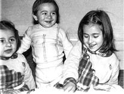
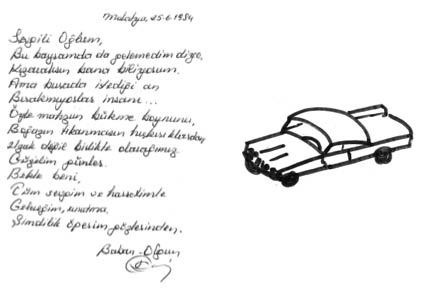

“Birçok Çocuğun Yaptığı Sıradan Şeyleri Ben Hiç Yapmadım Babamla.”
Özgür Delikanlı2
12 Eylül döneminde çekirdek ailemden babam Olgun Delikanlı içeri alındı. Artvin Dev-Yol davasında ve TÖB-DER davasında yargılandı. Ceza Yasası’ndan geçmişte çıkarılan 141/1. maddeden yargılandı. 8 yıl ceza aldı. 5.5 yıl Erzurum Askeri ve Sivil Cezaevi, 1983 yılından sonra da Malatya E Tipi Cezaevinde kaldı.
Darbe öncesi annem ve babam öğretmenlik yapıyorlardı. Artvin’de yaşıyorduk. Darbe olduğunda ve babam alındığında ben annemin karnındaymışım. Benden büyük iki ablam var, Eylem ve Özlem. Babamın gidişi bir yana annem de Ağrı’ya sürülünce, aile bir de o şekilde bölünmüş. Annem işini bırakmamış. Zaman zaman bizleri de yanına alıp Ağrı’da 3 seneye yakın öğretmenlik yapmış. Babamın tutuklu olduğu süreçte mutlaka görüşlere götürmüşlerdi beni ama o görüşlere dair hiçbir şey hatırlamıyorum. Ben o geçmişi daha çok anlatılanlardan biliyorum. Hem çok da sorguladığım söylenemez. Ben bilinçli bir şekilde hayatı algıladığımda, babam cezaevinden çıkmış, çoktan Ankara’ya taşınmıştık.
Çocukluğuma dair Dikmen’deki evimizi hatırlıyorum. Anneannemler de Artvin’den Ankara’ya taşınmışlardı. Aile yine bir araya gelmişti. Zor zamanlardı. Herkes doğduğu ve yıllarca yaşadığı yerleri bırakıp başka bir şehre gelmişti, idare etmeye çalışıyordu.
Babam cezaevinden çıkıp Ankara’ya geldiği zaman ben, 5.5 yaşındaydım. Bu 5.5 sene içinde babamı görmem dördü geçmez. Dolayısıyla geri geldiğinde, hayatıma, yeni bir kavram olan baba kavramı giriyordu. Babamı o dönemlerinde gergin biri olarak hatırlıyorum ama yine de evimiz gergin bir ev değildi. Öyle derin hüzünlerin yaşandığı bir ortam da yoktu. Çünkü annem son derece neşeli bir insandır. İçinde fırtınalar kopsa da asla karalar bağlamaz, kendini işine ve çocuklarına adamıştır. O zaman da öyle yapıyordu. Dolayısıyla o dönemde de aileyi tekrar toparlamanın yanında, bütün enerjisini çocuklara daha iyi bir ortam ve eğitim nasıl sağlarım diye harcamıştı. Biz de her çocuk ne yapıyorsa, onları yapıyorduk. Bisiklete biniyorduk, top oynuyorduk, yeterince macera yaşamamış olacağız ki Dikmen’in sırtlarında “macera aramaya” çıkıyorduk! Babamsa o dönemde biraz daha mesafeli ve özel hayatında içine kapanık bir insandı. Hatırladığım ilk baba silueti o aslında. Çok konuşmayan, günaydın, iyi akşamlar deyip kendi işinde olan biriydi. Şimdi geriye dönüp bakıyorum da onun için de kolay olmayan bir dönemdi. Ne yapacağı belli değil, tek bildiği iş öğretmenlik ama öğretmenliğe geri dönemiyor, aynı zamanda siyasi yasaklı. Yapacağı pek bir şey kalmıyor geriye. Bugünden bakınca o zamanki gerginliğini normal karşılıyorum.
Evde bir şekilde çocukların hayatı dönüyor, dönmek zorunda çünkü. O biraz da annemden, onun güçlü bir kadın olmasından kaynaklanıyor. Babamın yokluğunda da çekip çeviren o, sonuçta. Annemin bu kadar işin altından kalkması, biraz da babaannem ve dedem başta olmak üzere büyük ailenin desteğini alması sayesindeydi sanıyorum. Biz çocukların üzerinde dedemin ve babaannemin büyük emeği vardır. Bir de 3 tane çocukla uğraşmak kolay değil, hepsi de birbirine yakın yaşlarda. Yedirip giydirmekten de öte, bir yandan da büyüyüp gidiyorlar, iyi eğitim almaları gerekiyor. Kozmopolit bir şehirdeyiz, annemin ve babamın, bir de Ankara’yı keşfetme uğraşı var. O telaş zaten her şeyi alıyor götürüyor, toparlayıcı unsur biraz da o olmuştur diye düşünüyorum.
Biz büyük bir ailede büyüdük, ortamımızın gergin, acılı ve karamsar olmaması biraz da o yüzdendi. Teyzeler, dayılar, büyükbabalar herkes birbirine yakın yerlerde oturuyordu. Bir sürü kuzen bir arada büyüyorduk, birlikte, kalabalığa ve her şeye rağmen mutlu bir aileydik. O anlamda Karadeniz insanının kenetlenme duygusuyla biz aile olarak birbirimize kenetlendik. Belki de becerebildiysek o dayanışmanın sayesinde olabildiğince normal insanlar olabildik. Sevgi eksik olmadı ailemizde. Belki de ondandır, hep adım gibi “Özgür” oldum, arkamda büyük bir güç hissettim, yapmak istediklerim için hep arkamda ailemin desteğini buldum.
Ailemiz her ne kadar olabildiğince normal bir hayat oluşturmak için uğraşmış olsa da çocukluğum ve ilkgençliğim süresince babamla arama hep bir mesafe girdi. Bu bence ikimizin de bildiği bir şeydi ama onun nasıl ortadan kalkacağını pek bilemedik. Babamla baba-oğul ilişkisinin 5.5 yaşından sonra başlamış olmasının etkileridir diye düşünüyorum. En başta yakın bir diyalog kuramamıştık ne de olsa. Bu tamam deyince oluşabilen, sonradan inşa edilebilen bir şey de değilmiş demek ki! En azından bizim durumumuzda ilk beş seneyi beraber yaşamayınca, daha sonra oluşan o mesafenin, aranın kapanması da yıllar aldı. Benim gözlemimdir bu, Eylem’le babamın ilişkisi daha yakındır, farklıdır mesela. Babamın 12 Eylül’den önce Eylem’le daha çok zaman geçirmişliği var ne de olsa, aynı şekilde Özlem’le de…
Benim hayatımda ise anne çok baskın bir karakterdir. Ne olursa olsun, başıma ne gelirse gelsin, ilk söylediğim kişi annemdir. Ben zaten babama gündelik şeylerden bahsetmezdim. Öyle oldu, böyle oldu diye detay vermek değil de, yalnızca olanı aktarırdım. Belki de bu, annemi uzun yıllar hem annem hem babam olarak gördüğüm içindir. Annem dışında model alabileceğim dayım ve büyükbabalarım vardı etrafımızda. Büyükbabamı ne kadar model aldım bilmiyorum ama kesinlikle annemin hayata dair öğrendiklerimde büyük payı olduğunu söyleyebilirim.
Bütün bunlara rağmen hiçbir zaman babama karşı bir öfke veya kin duymadım. Bize böyle öğrettiler diye değil de ben şöyle düşünüyorum, zannediyorum ablalarım için de öyledir, biz babamızın doğru olanı yaptığını düşündük hep. Ben de olsam öyle yapardım. Bizim yaşadığımız da aynen böyle bir sonuçtu zaten. O nedenle ben yaptığı fedakârlığa, verdiği mücadeleye çok saygı duyan bir insanım. Baba-oğul ilişkileri açısından negatif etkileri oldu ama ben bunun o kadar da büyütülecek bir durum olduğunu düşünmüyorum. Belki birçok baba da öyledir toplumumuzda. Mesela babamla bir kere olsun sınavına çalış, dersine çalış gibi gündelik konuşmalarımız olmadı. Annemin, tez canlı oluşundan ve böyle şeyleri hep o idare edip yola soktuğundan, babama pek iş kalmazdı. İşleri uzaktan takip etmeyi tercih etti, daha çok. Bütün bunların dışında birçok çocuğun yaptığı sıradan şeyleri, ben hiç yapmadım babamla. Mesela bir futbol maçına beraber gitmişliğimiz yoktur, en basitinden yalnızca baba-oğul olarak yaptığımız bir şey olmamıştır. “Oğlum şunu şöyle yap” gibi hayata dair öğütleri bile olmamıştır, erken yaşlarımda. O duvarı kırmak çok zamanımızı aldı, ben ancak Ankara’dan çıkıp da New York’a yüksek lisans yapmaya gittiğimde –ki bu 25 yaşıma denk geliyor– babamla aramdaki o mesafe kısaldı diyebilirim.
Çocuk gözüyle göremediğim ama büyüdükçe fark ettiğim birçok şey oldu babamda. En çok değer verdiğim ve örnek aldığım olgu; babamın yıllar geçmesine rağmen siyaseten bozulmamış ve kirlenmemiş olmasıdır. Hele de bugünden dönüp baktığımda bunun başarılması zor ve ender bir şey olduğunu düşünüyorum. Dolayısıyla sıradan bir “Dersini çalış” öğüdünden çok daha değerli bir örnek olarak duruyor karşımda.
Eylem, değiştirdiği birçok okulun ardından beşinci sınıfı Ahmet Vefik Paşa İlkokulu’nda okudu, dolayısıyla biz de aynı okuldaydık. Annemin hep şunu dediğini hatırlıyorum, babanız ne iş yapıyor diye sorarlarsa öğretmen deyin. Halbuki babamız zaten öğretmen ama işte annemdeki o korku seneler geçmiş olsa da aynı şekilde devam ediyordu: “12 Eylül’den ve babanızın cezaevine girdiğinden bahsetmeyin.” Çocuk olarak ilk hatırladığım şeylerden biri odur. Eylem tabii daha büyüktü o zamanlar, Eylem’in hikâyeleri başkadır ama bana açıkçası işin çok fazla onu anlatma bunu anlatma boyutu yansımadı.
Çok zor okuyan bir çocuktum, ailedeki kimsenin benden eğitim anlamında bir umudu yoktu. Her ne kadar ilkokul hayatım başarılı geçmiş olsa da ortaokul ve lisede derslerim çok kötüydü, birçok okul değiştirdim. Bu nedenle çok fazla ve çok değişik yerlerden arkadaşlarım oldu. Özellikle ortaokul sonu ve lisede arkadaşlarımla paylaştım babamın siyasi geçmişini. Özel olarak sakladığım bir konu değildi. Ben o zaman da bir gurur kaynağı olarak anlatıyordum aslında, bir pişmanlık olarak değil. Babam evde benimle çok fazla iletişim kuramazdı ama inanılmaz bir şekilde arkadaşlarıma çok yakındı. Evimize gelip bizimle kalan arkadaşlarımla çok keyifli sohbetleri olurdu.
Daha sonra ODTÜ’ye girdim. Son derece politik bir okulda okumama rağmen, okuldaki örgütlüler içerisinde olmadım. Çünkü, ben hep bu ortamın içindeydim, içine doğmuştum ve ÖDP kurulduğundan beri de üyesiydim. Babamın çalışmalarının birçoğunu da takip ediyor, gerektiği yerlerde ben de katkı koyuyordum. Siyaset benim için olağan bir şey, hayatın bir parçasıydı. Annemin bizleri politikadan uzak tutma eğilimi doğal olarak vardı ama onun çok fazla etkili olduğunu düşünmüyorum. Ablalarım üzerinde de çok fazla bir etkisi olmadı. Politikadan uzak tutma eğilimi, asla apolitik olalım anlamında değildi, zaten öyle olması da mümkün değildi. Annem, çocuklar bilinçli olsun ama bizim yaşadıklarımızı yaşamasınlar istiyordu. Bu da anlaşılır bir duyguydu. ODTÜ’deki son senemde Öğrenci Başkanlığı’na adaylığımı koydum ve kazandım. Okuldaki son yılımı da öğrencilerin, işleyişinden memnun olmadıkları birçok şeyi değiştirmeye, iyileştirmeye harcadım.
Biz aile olarak babamın, cezaevi yıllarını gerek psikolojik gerek ekonomik anlamda tüm sıkıntılarıyla yaşadık ama asla bunu başımıza gelen en büyük felaket olarak nitelendirmedik. Hep şanslı olduğumuzu, en azından babamızın sağ salim geri dönmüş olduğunu düşündük ve yolumuza devam ettik. Çok fazla da geçmişi o anlamda irdeleyecek zamanımız olmadı. Etrafımızda bizim kadar şanslı olmayan yüzlerce, binlerce aile varken, ah vah etmenin biraz da o insanlara saygısızlık olacağını düşündük hep.
Bu darbenin aslında biz çocuklara ödettiği bedeller saymakla bitmez ama benim açımdan değerlendirirsek, babamla ancak 5.5 yaşında tanışmama ve normal baba-oğul ilişkisini uzun yıllar kuramamıza sebep oldu diyebiliriz. Bu tartışıyoruz ve anlaşamıyoruz anlamına gelmedi hiçbir zaman. Ama onun ötesinde iş biraz da idealizmin boyutlarına geliyor. Babam gibi idealist, devrimci olan insanlar, ailelerini ister istemez geri planda bıraktılar. Ben öncelikle oradan başladığını düşünüyorum işin. Bunu da bir sitem olarak dile getirmiyorum. Sadece kendi çocuğunun, kendi ailesinin değil, topyekûn bir toplumun hayatını dönüştürmeye, kendini adamış ana babalardan söz ettiğimiz zaman, elinizden yalnızca saygı duymak geliyor.
Biz ve bizim gibi çocukları, yalnızca 12 Eylül değil, aynı zamanda bu idealizm de değişik boyutlarda etkiledi diye düşünüyorum. Sanıyorum bu sürecin biz çocuklara en büyük etkisi zamanından önce olgunlaşmak ve sorumluluk almak oldu. Kendi ayaklarının üstünde durmaktan başka bir güvencenin olmayacağı güdüsüyle büyüdük. Bir de dayanışmanın güzel bir şey olduğuyla... Babamın idealizmi bütün çocuklarını etkiledi kuşkusuz. Eylem ve Özlem’in birçok çalışmanın yanında, bu projeyi bir araya getirmek istemelerinin ardında da o yatıyor diye düşünüyorum. Benim ODTÜ’de Öğrenci Başkanlığı’na soyunmamın çıkış noktası da orasıdır. Fakat babamın aktif siyaseti benim biraz daha onun dışında durmama da sebep oldu diyebilirim. Bizim ailede bütün mesaisini siyasete adayacak iki kişiye yer yoktu, hem finansal hem de fiziksel olarak.
Babam, öğretmenliğe geri dönemeyince ticaretin içinde buldu kendini, mecburen ama hiçbir zaman ticaret insanı değildi. Ben de ablalarımdan farklı olarak, biraz ticaretin içinde oldum. Bugün iş dünyasında, ticari olarak başarı elde edebiliyorsam, oradan geldiğini düşünüyorum. Tabii ki okuduğum okulların, edindiğim akademik bilginin de çok büyük etkisi var ama temel olarak sıfırdan başlayıp çalışarak üst üste bir şeyler koyduğumuzu düşünürsek, başladığımız yere göre geldiğimiz yer, bizim için inanılmaz bir yol katetmedir.
Ben 25 yaşıma gelip de “12 Eylül varmış, babamı içeri almışlar” diye büyümedim. Hayatın doğal akışı içerisinde neyin ne olduğunu öğrenmiştik. O doğal akış şöyle gerçekleşiyor: babamın mücadele arkadaşları eve geliyorlar, yemek yeniyor, sohbet ediliyor, çoğu şeyi ben masada duyuyorum, dinliyorum ve öğreniyorum. Babam, son birkaç seneye kadar asla bize cezaevi sürecinde gördüğü işkencelerden bahsetmedi. Küçükken kimse yanımızda işkencelerin bahsini açmadı, misafirler de konuşmadı. Bizim evin

Özlem, Özgür ve Eylem
Ağrı’da doğum günü kutluyorlar.
bütün duvarları kütüphanedir, kimse zorla oku da demedi, kitaplar orada dururdu, süreç içerisinde olayın zaten farkındasınız ve okuyorsunuz da. Biz babamızın yaşadıklarına kendimiz okuyarak ve araştırarak hâkim olduk. Çünkü babama hiçbir soru sormadım o günlere dair. 12 Eylül’ün ne olduğunun ve bizden neler götürdüğünün farkındaydık ama senaryonun arkasında neler olduğunu, 24 Ocak Kararları’nı, bu çerçevede sistemin neoliberal politikalarla, nasıl yeniden inşa sürecine sokulduğunu, daha net ve detaylarıyla kendim okumaya başladığım zaman öğrendim. Bizim sohbetlerimiz geçmişi deşmek üzerine kurulmazdı. Ailemiz genel olarak da en az üç farklı sol geleneğin temsil edildiği bir ortamdı. Dolayısıyla bizim masalarımızda saatlerce siyaset konuşulur, sohbetler o yüzden hiç bitmezdi.
İçimi En Çok Acıtan
Bir kızgınlığım şudur aslında: Türkiye’de geldiğimiz boyutta o kuşağın hem yaptıklarının hem de yapamadıklarının çok büyük etkisi var. Eğer söylediklerini yapabilmiş olsalardı bugün bambaşka bir Türkiye olacaktı ortada. Ona çok içim yanar mesela.
Öte yandan ben de babamla normal bir baba-oğul ilişkisi yaşamış olmayı isterdim. Muhakkak daha iyi olurdu.
Psikoloji
Fonksiyonel olarak dengeli bir ailede büyüyüp büyümediğimin kararını verecek kişi ben değilim, sağlıklı bir ortamda büyüdüğümü söylemiyorum, bu mümkün değil, ortada böyle bir olay var. Bunun içerisinde büyüyorsunuz, bunun etkileri olabilir. Kendi duygularını, kendi içinde yaşama hissiyatı geliştiriyor ama bakarsanız onu söyleyecek olan psikologdur, biz de bir psikoloğa görünüp, nedir halimiz diye sormadık açıkçası. Normal bir aile ortamında büyüyemedik, ne yazık ki ama bizim ailemizde ben hiçbir zaman kavga sesi duymadım, hiçbir zaman annemle babamın tartıştıklarını duymadım. Biz akşamları oturur, hep beraber haberleri izlerdik, annem konuşurdu sadece. Ben de anneme anlatırdım. Ablalarım zaten üniversite yaşında İstanbul’a gitmişlerdi. Arkadaşlarımın evine gittiğim zaman, babacığım nasılsın, anneciğim nasılsın gibi diyaloglar çok garip gelirdi bana. Onun dışında kavgaydı gürültüydü öyle şeyler hiç görmedik biz. Annem sağlayabildiği kadar normal bir ortam sağlamış diye düşünüyorum ama ne kadar sağlayabilirsiniz ki babanın olmadığı ortamda beş sene, başından bunlar geçen biri olarak annem de zor bir durum içerisindeydi. Çok sağlıklı yetiştiğimizi, ortamın deneysel olarak çok dengeli olduğunu söyleyemem ama olabildiğince düzgündü.
Beş yaşından öncesini, belki de babanın yokluğunu hissetmediğim için mi hatırlamıyorum, onu da bilmiyorum. Hiç hatırlamıyorum, öyle bir ihtiyaç duyduğumu da. Ben Ağrı’ya dair, Artvin’e dair de hiçbir şey hatırlamıyorum. İlk gözümü açtığımda, zaten babam vardı yani. Bilemiyorum belki de hafızam mı kaydetmedi babanın yokluğunu, sanki ben gözümü açtığım anda babam karşımdaydı, bildiğim kadarıyla, görüşe de gitmişiz, tel örgülerin arkasına geçmişiz ama ben hiç hatırlamıyorum. Mesela Eylem de enteresan bir şekilde cezaevi dışındaki birçok şeyi detaylarıyla anlatabiliyor, evin aranmasını, babamı evden götürdükleri anı, televizyondaki teslim ol anonslarını, Erzurum’a gidişleri, Gez Oteli’ni, Malatya’yı, cezaevi kapısındaki askerleri ve hatta onların dipçiklerine varıncaya kadar birçok şeyi aktarabiliyor ama babamı asla tel örgüler arkasında hatırlamıyor. Hafızası asla o şekilde kaydetmemiş babamı, Eylem’in görsel hafızasına göre babam, cezaevine hiç girmemiş. Şimdi böyle anlatınca, iyi bir şey gibi düşünüyor insan; yani çocuk babasını o şekilde hatırlamıyor, ne güzel diyoruz ama hafızanın böylesi bir görselliği reddetmesine neden olan çocuğun içindeki o ruhsal devinimleri düşününce üzülüyorum. Özlem yaş olarak da bana yakındı. Ben onu hep ağlayan, son derece hareketli ve aksi bir çocuk olarak hatırlıyorum. Çocukken bunun ayırdına varmak mümkün değil elbette ama bugünden oraya bakınca daha farklı algılara ulaşmak mümkün. Eylem o günlere dair mutlu bir tablo çizmezken, Özlem mutlu bir çocukluk hatırlıyor. Üç kardeşiz, üçümüzü oturtsanız, hepimiz ayrı bir hikâye anlatırız. Çünkü yansımaları çok farklı olmuş. Belki de bu yüzden, hislerimizi dışarıyla çok fazla paylaşmayan, diğerlerine nazaran daha az konuşan çocuklar olduk. Belki de bunlar çoğu zaman bir anlam ifade etmedi dışarıdan bakan için veya bir mesafe olarak algılandı ama erken yaşta baş etmek zorunda kaldığımız bu olağandışı durumların elbette bir yansıması olacaktı. Biz, olabilecek en az hasarla yola, devam ediyoruz diye düşünüyorum. Durumu irdelediğimde yine de şanslıymışız, çok daha büyük çalkantılar yaşamamışız diyorum.
Ben Olsaydım...
Ben de aynı mücadeleyi kesinlikle vermek isterdim. Verebilir miydim? Babam ne yaptıysa, doğru bildiği neyse, aynı şekilde davranırdım. Zaten öyle, doğru bildiğim şekilde yaşıyorum. Hatta ben bizim kuşağın da o anlamda talihsiz olduğunu, önümüzde o tarz bir mücadele şansımızın bile olmadığını hep düşünürüm. Bir yandan da o şekilde bir kıskançlığım var aslında. Onların kuşağının, o tür bir mücadele ağı kurma şansı, o mücadeleye toplumdan destek alarak, ivme kazandırma şansı olmuş. Bizim kuşağımıza baktığımız zaman, o şansımız ne yazık ki yok. Benim annemin dedesi Ahmet Fevzi Erdem de Batum milletvekili olarak ilk Meclis’te Cumhuriyet’i kuranlardan biridir, ona da çok gıptayla bakıyorum. Başka bir mücadele olmasına rağmen, bu şansı yakalayabilmiş, toplumsal değişimin yaşandığı öylesi bir dönemde mücadelenin ucundan tutabilmiş. Bizim kuşağımız kayıp derken bizim önümüzde maalesef böylesi bir örgütlenmeden bahsedebilsek dahi, kitleleri peşimizden sürükleme gibi bir şansımız şimdilik yok. Yine de umutsuz değilim, her şey değişir, dönüşür ama rasyonel olarak baktığımızda halihazırda durum ne yazık ki bu.
Çok küçük yaştan beri böylesi bir idealizmle büyüdüğümüz ve babamda da hiç pişmanlık veya mücadelesinden taviz vermek gibi bir tavır görmediğim için beni hep etkilemiştir o siyasi duruş. Babamı kahraman gibi görmedim ama babamın hayata tutunuşu ve siyasi duruşunun bozulmaması bize şunu öğretti: “Bizim şikâyet edebileceğimiz hiçbir şey yok”. Babam diğer birçok örnekte olduğu gibi, ne yaptım ben diye yakınan, geçmişini sorgulayan bir insan olsaydı bende başka türlü bir etki yaratırdı ama o ve arkadaşları, aynen kaldıkları yerden, mücadeleye devam etmeye çalıştılar. Tekrar 50’li yaşlarında, görev bizi bekliyor deyip, hiçbir şey beklemeden aktif mücadeleye geri döndü. O da babamın kararlılığının ve davasına inancının hiç değişmediğini gösteriyor. Burada size sadece saygı duymak düşer. Babam kahramandır demiyorum ama mücadelesine sonsuz saygı duyuyorum. Çünkü o kuşaktan gelip o tür bir politik aktivizmden geçip, daha sonra hayata tutunamayanlar da oldu ama ben öyle bir şey görmedim babamda. Geleceği Birlikte Kuralım Platformu adı altında toplantılar düzenleniyordu, toplantılara gitmeye başladı. Devamında ÖDP kuruldu. Özellikle bizler için çok büyük bir heyecandı. Babam partinin değişik kademelerinde görev aldı, Genel Başkan Yardımcılığı, GYK, MYK üyelikleri ve Ankara İl Başkanlığı yaptı. Bu dönemde de çok az görür oldum babamı.
Kendimi politik bir kimlik olarak tanımlamıyorum. Bu biraz da annemden dolayıdır. Annem özel olarak beni siyasetin dışında tutmaya çalışmadı ama bir yandan da öyle olmasını istedi. Babam il başkanıyken, siyaset benim için şöyle bir şeydi biz aktif olarak seçimlerde çalıştık, her türlü aşamada her zaman çalıştık. Ben ÖDP’nin bütün mitinglerinde gidip yürümedim ama doğal olarak o sürecin içindeydim. 18 yaşından beri parti üyesiyim. Partili olmak, bize hep bir adım ötedeydi zaten. Biz annemle çalışırken, babam İl Başkanlığı yapıyordu, normalde babamın çalışıp para kazanıp benim okula gitmem gerekirken, tersini sürdürme zihniyeti ailemize ait bir durumdu.
Beni ben yapan, 12 Eylül olmuş oldu. Niye diyeceksiniz? Başımızdan geçen bunca şeyden sonra, benim yaşam tercihlerimi etkilemiş, babama bu şekilde mesafeli olmama sebep olmuştur. Belki ben, 5 sene sonra doğsam farklı olacaktı işler ama ben tam üzerine doğdum. Ben doğduğum zaman babamı görmeyip 5.5-6 sene sonra babasını gören bir insanım, bununla yüzleşen, iki tane ablası olan onlar da aynı durumlardan, annesi bu kadar zorluktan geçen bir kişiyim, bütün hayatımı 12 Eylül değiştirdi aslında. Öğrettiği bir şey varsa: Bize mücadele etmeyi, daha fazla mücadele etmeyi öğretti, belki bu kadar mücadeleci bir insan olmayabilirdim. Hayat felsefesi olarak annem bırakmış olsaydı, biz bugün olduğumuz yerlerde olamazdık. Mesela babam cezaevine girdiği zaman annem “Ben de boşanıyorum” deseydi, ailemiz bölünseydi, vazgeçseydi biz, üç çocuk da perişan olacaktık. Annemin yılgınlığa düşmeyişi, bize hayatımızda bir referans oldu. O yüzden, 12 Eylül, bizim karakterimizi bu şekilde biçimlendirdi. Bırakmanın yenilgi olduğunu düşünmek, anneden babadan çocuklara geçen bir şey oldu. Her zaman doğru olduğunu da söylemiyorum, çoğu zaman da gereksiz stres uyguluyor insanların üzerinde, çocukken de uyguladı ama bir yandan da bir şeyler yapabildiysek bu duyguyla yapabildiğimizi de düşünüyorum.
Darbe Olmasaydı?
Belki devrim olurdu (gülüyor)! Darbe olmasaydı ne olurdu diye düşünmedim pek. Verilecek birçok cevap spekülatif olur sanıyorum; fakat somut gerçekler de var tabii ki: Darbe olmasaydı babam en güzel yıllarını hapishanelerde, hücrelerde ve işkencede geçireceğine çocuklarıyla geçirecekti, ayrı kalmayacaktık, ilişkilerimiz altüst olmayacaktı, biz çocukların adalete olan güveni zedelenmeyecekti. Yerimizden yurdumuzdan olmayacaktık, sonuçta, Artvin’den çıkmış olduk. Belki yine çıkmış olacaktık ama bu bizim kendi inisiyatifimizle olacaktı. Bütün bunların yanında, adalete olan güvensizliğimiz en büyük problemdir diye düşünüyorum.
Babam devrimciydi. Örgütlü mücadele içerisinde yerini almıştı. Bir düşünceye inanmanın ve o uğurda mücadele vermenin bedelini ödedi. Ayrıca legal bir yapılanmanın da yöneticiliğini yapıyordu. Enteresandır ki, ceza aldığı faaliyetleri de legal faaliyetleriydi. Düşünün TÖB-DER, 670 şubesi ve 200 bin üyesiyle Türkiye’de yasal olarak kurulmuş bir dernek. Bu derneğin tüm faaliyetleri resmi makamlarca açıktan takip ediliyor, yasal varlığı hiçbir zaman, hiçbir biçimde tartışma konusu yapılmıyor ama darbeyle birlikte birdenbire gizli örgüt muamelesi görüyor ve yasadışı ilan ediliyor. Bir anda bütün yöneticileri, kendilerini demir parmaklıklar arkasında buluyorlar. Üstüne üstlük, 7 ay gibi kısa bir zamanda sonuçlandırılıyor, TÖB-DER davası. Öğretmenlerin üç kuruş maaşlarından artırarak oluşturdukları derneğin taşınır, taşınmaz mallarına el konuluyor, TÖB-DER kapatılıyor ve yöneticileri 8-9 yıllık cezalara çarptırılıyor. Kimler gönderiliyor demir parmaklıkların arkasına? Öğretmenler. Ne yapıyor bu öğretmenler? Gerici ve faşist örgütlenmenin karşısında bilimsel eğitimi savunuyor, okullarında bunu uyguluyor, öğretmenler arasındaki dayanışmayı güçlendiriyorlar, mücadeleyi eğitim alanında yürütüyor. Şimdi böylesi bir yargılamanın yapılabildiği adalet sistemine güvenebilir misiniz? Yargılamayı da geçtim. 1990’ların başında bu öğretmenlerin, birçoğunun suçlandığı 141. madde de tüm etki ve sonuçlarıyla kalktı. Yani öğretmenlerin bir anlamda sicilleri “temizlendi”, düşünce artık suç değil dendi. İyi, güzel, artık suç değil ama görülen işkencelerin, kaybedilen canların, yılların, dağılan ailelerin hesabını kim verecek? Bugün asker demir parmaklıklar ardına gönderiliyor diye tepki gösteriyor insanlar. Bana son derece içi boş bir tepki gibi geliyor. O muhalefetin ve tepkinin 12 Eylül’de öğretmenleri, doktorları, gençleri, öğrencileri haksız yere demir parmaklıklar ardına gönderdiklerinde, işkencelerden geçirdiklerinde, öldürüldüklerinde verilmesi gerekiyordu. Çünkü adalet bugün bizim, yarın başkaları için değil, hepimiz için her zaman gerekli. Birçok öğretmen bırakın cezaevinde olmayı, çıktıktan sonra da mesleklerini icra edemediler, yıllar sonra verilen hakları sebebiyle yıllarını kaybettiler, en basitinden diğerlerinin emekliliği geldiğinde emekli bile olamadılar, en üst dereceden emekli bile olamayacaklar. Peki bu haklar nasıl iade edilecek? Tabii ki adalet sistemine güvenmiyorum, bundan daha doğal ne olabilir ki?
12 Eylül Davası
Babamla aslında bu noktada aynı düşünüyoruz. Babamın dediği gibi “Biz devrim yapacaktık, yapamadık. Onlar da işkence yaptılar, hapse attılar, öldürdüler.” O noktadan sonra, aslında çok önemli değil. 12 Eylül Davası’nda mahkeme, darbeciler beraat etti dese ne olacak, onları cezalandırsa ne olacak! Bunun gerçek bir yargılama olduğunu düşünmüyorum, benim için hiçbir şey ifade etmiyor aslında. Toplum nezdinde de bir yarayı tedavi edeceğini, insanların beklentilerini karşılayacağını düşünmüyorum.
Kenan Evren’i mahkemeye bile çıkaramıyorsunuz. Mahkemeye bile gelmiyor adam, Tahsin Şahinkaya da gelmiyor ve getiremiyorlar da. Şimdi mahkemeye getiremediğiniz, hâkimin önüne çıkaramadığınız bir insanı nasıl yargılayacaksınız ya da yargılasanız ne çıkacak ondan! Bunun hesabı, bu kadar basit değil benim için. Bu düzenin içerisinde olan, Amerikan emperyalizmine hizmet etmiş ve onların maşası olan, 12 Eylül’ü tertip eden, düzenleyen insanlar var. Sadece asker de değil, tabii ki polisi var, hâkimi, savcısı, doktoru var. Bir büyük oluşum hepsi birlikte. Tek başına iki kişiyi sorumlu tutmak işin kolayı. Bunun arkasında binlerce insan var, binlerce işkenceci var, en basitinden. 12 Eylül Davası’nda gerçek bir yargılama yapılacaksa o süreçte her kademeden ve her meslekten görev alanlar ve suç işleyenler yargılanmalıdır.
Aslında değişen bir şey yok son 30 senede. Değişen hakikaten bir şey yok. Arada olan bizim dahil olduğumuz kuşağın ve bizden önceki kuşağın da birçok insanının hayatına mal oldu.
12 Eylül Davası ancak şuna hizmet eder: İnsanlar darbenin yanlış bir şey olduğunu anlarlar. 12 Eylül’den haberi bile olmayan yeni jenerasyona, 1980 Darbesi’ni ve paşalarını tanıtır, bu topraklardan Raci Tetik, Ferit Ildırar veya Esat Oktay Yıldıran gibi işkencecilerin çıktığını, Diyarbakır gibi bir cehennemin yaratılabildiğini gösterir. DAL neresidir, tabutluk ne demektir onları açıklar. Yapılan işkencelerin boyutlarının daha geniş bir kesim tarafından bilinmesini sağlar. Bizim otuz senedir büyüdüğümüz hikâyelerle, bu kez de bilmeyenler yüzleşir. Bunlar önemsiz mi? Pek tabii ki değil, umarım tarihe bu tür bir kayıt düşme fonksiyonu, katkısı olur ama bütün bunlardan da öte “İyi ki darbe oldu, yoksa çok kan dökülüyordu” diyenlerin, gençleri, öğretmeni, işçisi, köylüsü işkencelere götürülürken, arkalarından anarşist, terörist diye damgalayanların, bizi bugün hâlâ cendere altına alan 12 Eylül Anayasası’na “evet” oyu verenlerin vicdanında bir yara açmadığı sürece Dava’nın toplumsal yüzleşme sağlayacağını, yaraları sağaltacağını düşünmek hayalperestlik diye düşünüyorum.

Olgun Delikanlı’nın oğlu Özgür’e yazdığı mektup
2 1981 doğumlu. Mühendis / Ekonomist. Babası içeri alındığında Özgür henüz doğmamıştı.